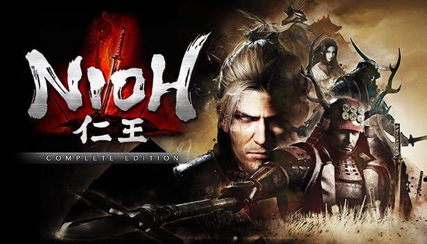

- Nioh
- Dark Souls
- Blood Borne
- The Surge
- The Surge 2
Nioh é um jogo eletrônico de RPG de ação desenvolvido pela Team Ninja e publicado pela Koei Tecmo para o Playstation 4 e Windows PC.

R
P
G
AMESNioh é um jogo eletrônico de RPG de ação desenvolvido pela Team Ninja e publicado pela Koei Tecmo para o Playstation 4 e Windows PC.